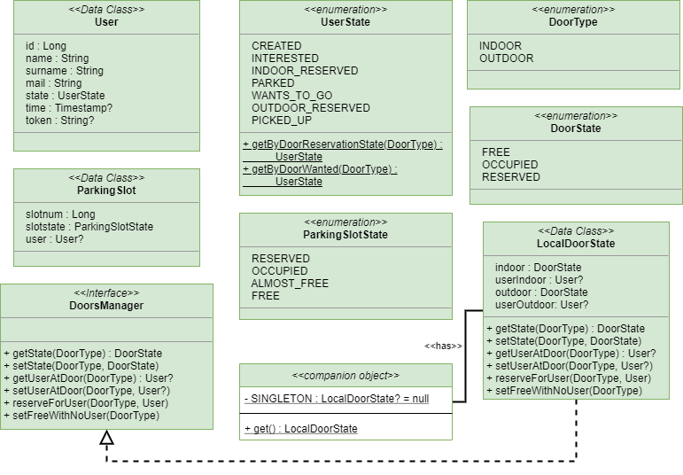

- Last Architecture and aim of this sprint
- Introduction
- Bean classes
- Persistence classes
- Testing
- Final results of this sprint
Last Architecture and aim of this sprint
Logical Architecture | Resources |
Executable QAK Modelparkmanagerservice_2.1.qakTest FilesFirstTestPlan.javaBasicdevice QAK Modelbasicdevice1.0.qakoBasicdevice Test Filesdevices_pytest.py |
In this sprint, we will go to zoom into the undefined entity Status that will contains everything is needed to maintain the state of the system.
Introduction
From the analysis, it is clear that the main server that realizes the application logic must have a way to maintain the state of the entire system. In order to do this, in this sprint we are going to project a set of persistence classes that can be used by the APP-SERVER.
To meet the requirements it is not necessary to have a complex persistence structure because all data to maintain are:
six slot and, in addition to this, he has no claims about the registration of the user. So, in this first developement, we decide to use shared variable to save the state.
Notice that it is strongly discouraged because of if the system takes demage then it can loss all data, but it is the fastest method to easily have a working prototipe. Then, if the classes will be designed with strong extensibility, so will be easy to save the state on another better support.
- the state of the doors (indoor and outdoor);
- the user that are using the system;
- the state of all parking slot.
Bean classes
Package it.unibo.parkmanagerservice.bean
The model of the entire application is composed of Java Bean, which are Java classes with a particular convention that allow to map persistent entities of the system in the Object World.
Since we are using QAK-System, and then Kotlin, instead of the classic Java Beans, we will use the Kotlin Data Classes which are specific for persistence. These classes will be easily reusable in future developements also with the use with a database (see the tutorial Building web applications with Spring Boot and Kotlin).
The two domain entities that require a Kotlin Data Class:
Since we are using QAK-System, and then Kotlin, instead of the classic Java Beans, we will use the Kotlin Data Classes which are specific for persistence. These classes will be easily reusable in future developements also with the use with a database (see the tutorial Building web applications with Spring Boot and Kotlin).
The two domain entities that require a Kotlin Data Class:
User : User.ktSlot : ParkingSlot.kt
Door State : LocalDoorState.kt
User.ktThis data class maintains the information about an user. Every user
|
UserState.ktThis enum class represents the state that a user can have:
|
ParkingSlot.ktThis class maintains the information about a parking slot. Every slot
slot.user.token == TOKEN |
ParkingSlotState.ktThis enum class represents the state that a slot can have:
|
LocalDoorState.ktThis class maintains the informations about the two door:
|
DoorState.ktThis enum class represents the state that a door can have:
|
DoorsManager.ktThis interface defines the behavior of a Door Manager then has a lots of utility methods to set the state of a door:
val USER = ... //... manager.reserveForUser(DOOR, USER) //The door DOOR is now reserved to the user USER //... manager.setState(DOOR, LocalDoorState.OCCUPIED) //The door DOOR is now occupied by the user USER //... manager.setFreeWithNoUser(DOOR) //The door DOOR has been set to free and relative //user is null |
|
Persistence classes
Package it.unibo.parkmanagerservice.persistence
The class in this package realize the concept of repository ; so, every class of the bean package, must have an own repository that implements the CRUD operations over the data structure.
Pay attention beacausethese implementation of repository can not be used in a concurrent environment , so it is not safe to access repositories bot in writing and reading way from more than one actor. If you want to share them with more than one actor, so there are needed others coroutine-safe implementations.
In addition, in a future development, it is possible to set the system to use a database or another data structure by:
UserRepository.ktThis interface defines the behavior of a repository for the bean User. Besides the |
BasicUserRepository.ktThe implementation of UserRepository using local memory. All users are saved into a Map. Notice that the method |
ParkingSlotRepository.ktThis interdace defines the behavior of a repository for the bean ParkingSlot. Besides the |
BasicParkingSlotRepository.ktThe implementation of ParkingSlotRepository using local memory. All slots are saved into a Map. |
DoorQueue.ktThis interface is an abstraction for realizing the concept of
|
LocalDoorQueue.ktThe implementation of the interface DoorQueue that use a Kotlin ArrayDeque. |
DoorQueues.ktAn utility class that is sort of double singleton. This class is a point of global access for the two door queues of the system, then istantiatiating and maintaining the unique queues associated to the doors. In order to access the queue, the system must perform:DoorQueues.getIndoorQueue() //Return the indoor queue DoorQueues.getOutdoorQueue() //Return the outdoor queue |
ParkingRepositories.ktAn utility class that is sort of double singleton. This class is a point of global access for the two repositories of the system (user and slots), then istantiatiating and maintaining them. In order to acces the repositories, the system must perform:ParkingRepositories.createBasics() //Create the two repositories in their basic version ParkingRepositories.getUserRepository() //Return the unique user repository ParkingRepositories.getParkingSlotRepository() //Return the unique slot repository |
Pay attention beacause
In addition, in a future development, it is possible to set the system to use a database or another data structure by:
implementing a new classes for UserRepository, ParkingSlotRepository and LocalDoorQueue;modify the methods contained into ParkingRepositories and DoorQueues in order to use the new classes.
Final results of this sprint
Logical Architecture | Resources |
 |
Executable QAK Modelparkmanagerservice_2.1.qakTest FilesFirstTestPlan.javaBasicdevice QAK Modelbasicdevice1.0.qakoBasicdevice Test Filesdevices_pytest.py |
We decide that the trolley will be mapped in a future sprint, maybe in the same context of the server. Then, basicrobot, is almost the equivalent of the actors of the device presented in the sprint for the robot, but he lives in his context.
By students Names: Simone Mattioli , Luca Marchegiani Email: simone.mattioli6@studio.unibo.it , luca.marchegiani3@studio.unibo.it Git Repo: https://github.com/LM-96/ParkManagerService